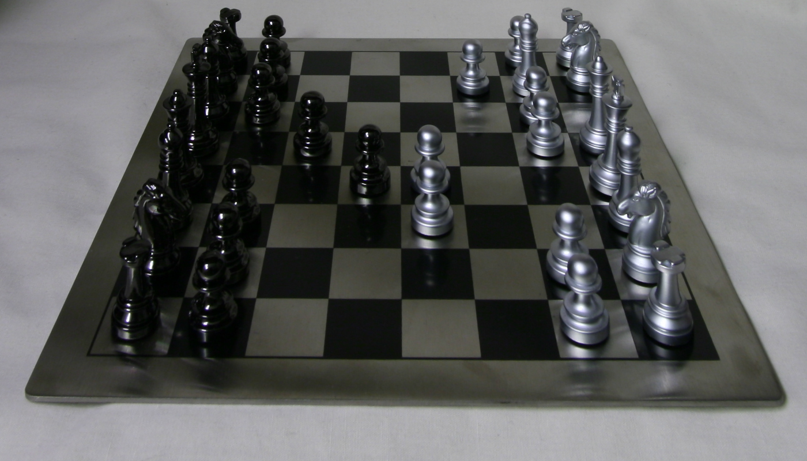

If we capture images by moving the camera around while keeping the optical axis direction unchanged, we can create complex effects with only simple operations such as shifting and averaging.
If we simply average the images, the resulting image will just be blurry around near objects but sharp around the far-away ones. If we want to change the focused object, we can use a different depth. To do so, I chose the center to be the reference coordinate. Then, for each image, I calculated its offset from the reference and multiplied it by a scaling factor c to get its shift. I eventually shifted all the images and averaged them to get a refocused image.
c = 0.0, 0.25, 0.5
As c increases, it focuses more on the nearby objects.
We can use less images when averaging to mimic a smaller aperture. I used c = 0. When averaging the images, I only included images whose distance to the reference was smaller than r.
r = 0, 4, 8

With r = 0, the image is sharp everywhere. As r increases, it focuses more on the far-away objects.
In this project, I learned how we can process the images easily to change its focus just like how we would adjust it when capturing an image with a camera.